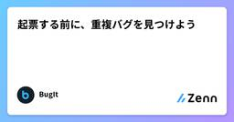

Zennの「QA」のフィード
フィード

起票する前に、重複バグを見つけよう
Zennの「QA」のフィード
ログイン画面のバグを例に考えてみます。月曜日にテスターが「ログインのスピナーが回り続ける」と書きました。火曜日にはサポート担当が「パスワード画面の後でサインインできない」と書きました。水曜日には開発者が、トークン更新のタイムアウトに触れた3件目の報告を見つけました。チケットは3件、担当者は3人、バグは1つです。それぞれのチケットが答えの一部を持っています。1件目には手順があり、2件目には待っているお客様がいて、3件目にはログがあります。全体像を誰も見られないまま、同じ問題を誰かが3回トリアージすることになります。重複は不注意の表れではありません。違う人が同じことを違う言葉で表現すると...
1日前

Bugbash改め『デモ会』へ。CSメンバーが参加するようになって変わったこと
Zennの「QA」のフィード
こんにちは！アルダグラムでQAエンジニアをしているshige_sです。2024年から取り組んでいる「Bugbash」について、以前こちらの記事でご紹介しました。https://zenn.dev/aldagram_tech/articles/7f4f7e5a1f3b97あれから2年以上が経ち、このイベントは今では開発プロセスに欠かせないものとして定着しています。今回は、今年7月から新たに加わった変化と、それにあわせて変更したイベント名「デモ会」についてご紹介します。 これまでの参加メンバーこれまでBugbashに参加してもらっていたのは、以下のような開発に近いメンバーでした。...
3日前

技術で品質とスピードを両立させるQAリードです
Zennの「QA」のフィード
はじめにはじめまして、カウシェのテクノロジー部でQAチームのリーダーをしている亀井です。2026年10月から正社員になりました。前職はマネーフォワードです。ISTQB Advanced Level（Test Management）を持っていて、ISTQB Expert Levelシラバスの日本語翻訳も担当しています。カウシェの開発チームは、開発者1人あたり1日約15PRのペースでコードを出すことを目指しています。Zennでは、この開発スピードにQAがどう追いつくか、AIと自動化を前提にした実践記録を書いていきます。この記事はその1本目として、私が何者で、何を考えてQAをやってい...
10日前
【Playwright×AI】E2Eテストの実装から失敗トリアージまで、AIに任せて運用してみた
Zennの「QA」のフィード
はじめにこんにちは！e-dashでQAエンジニアをしているpulasQです！👋従来からリグレッションテストを自動化することで手動のテストの工数を削減したり、品質を作り込むことで安心してリリースできる状態を作ったりすることが、E2Eテスト自動化の主な目的の例として挙げられてきました。さらに今は、AIがコードを書くのが当たり前になり、開発のスピードは上がり、E2Eテストの重要性について議論されることも増えてきました。自動テストを導入していても、テストを書く・回す・落ちた原因を調べる、をすべて人の手でやっていては、E2Eテスト自動化の推進が遅くなってしまいます。そこで弊社QA(S...
10日前
AI Slop なテストコードにならないためにどう対処するか？
Zennの「QA」のフィード
はじめにこんにちは。株式会社ソニックムーブでフロントエンドを担当しているy.morimotoです。AIに既存の実装からテストを書かせてみると、大変よくできたテストを生成してくれるようになりました。しかし、後々しっかりレビューしてみると、本来の品質として何を保証しているのかが分からないテストが至るところに散見されました。単に実装からテストを生成させるだけでは、品質を担保できているとは言い難い結果となりました。今年はQAやテスト自動化に関する勉強会に何度か参加し、各社のQAの取り組みやAI活用の取り組みを聞きました。そこでは、各社「テストにおいてどのように品質を担保しながらAIを活...
11日前
Agent Skillsで、不具合分析レポートの生成を仕組み化する
Zennの「QA」のフィード
はじめにこんにちは。e-dashでQAをしています、rinです。最近、本番で起きた不具合とスプリント中に見つかった不具合を、レポートにまとめて共有する取り組みを始めました。ただ、形式が決まっていないので、作る人によって見せ方が変わってしまい、受け取る側からすると毎回ちがう資料が出てくることになります。分析の質を上げることも大切ですが、まずは「誰が作っても同じものが出る」状態が必要だと考えました。この記事は、Agent Skillsを使って不具合レポートの型を固定してみた話です。 1. 設計 1-1. 何が取れるのか分析するためにどんな情報が収集できるのかを整理す...
11日前
AI時代こそ大事な品質担保💪 QAを自動化するツールは何があるか
Zennの「QA」のフィード
AI時代こそ品質担保が大事AIの普及によって、コードを書く作業の価値が下がり、価値の中心は何を作るか決めることと品質を保証することに移りました。システム開発において必要なポジション、役割は以下の3点だと思います。1.AIに指示を出す前の仕組み作り、要件定義、設計2.品質担保3.システムが問題なく運用できるようになるためのインフラ部分 QA(テスト)の自動化はなぜ必要かまず手作業で全部動作確認していたら、まず時間はかかるし、確認漏れが起きて、本番環境でバグが発生してしまうみたいなことが起きます。お金や労力をかけたのに、リターンがない状況になってしまいます。QAの自動...
11日前
テスト要求仕様（TRS）を書いてみたら、テスト設計が楽になった話
Zennの「QA」のフィード
こんにちは。e-dashでQAエンジニアをしているuedaです。みなさんはテストをするにあたって、どんなドキュメントを用意していますか。e-dash の QA チームでは、テストケースの前に テスト設計書（Test Design） を用意します。直近では、そのさらに前に テスト要求仕様（Test Requirement Spec、以下 TRS） を挟んでいます。テスト対象がどう動くべきかを確定させ、その確認に使う因子と水準まで決めておく文書です。これでテスト設計が、想像していたよりずっと楽になりました。何がどう楽になったのかを書きます。 1. これまでどうやってテスト設計をし...
12日前
探索できる人は何をしているの？『Explore It!』を読んで
Zennの「QA」のフィード
ナレッジワークでQAエンジニアをしている かとあず です。探索的テストをすると、何かしらを見つけることが多くあります。細かい部分だったり、「そこを気にするんだ？」と言われそうなコーナーケースだったりします。しかし、「なぜそれに気づいたの？」と聞かれると、うまく説明できません。反対に、「探索的テストをしました。何も見つかりませんでした。」となると、「品質がよかった」とは思えません。「それって本当に探索できていたのかな？」「別の人が探索したら何か見つかったのかもしれない」と思ってしまうこともあります。 「探索できる人」は、いったい何をしているんだろう？そんなことを考えていたときに、...
13日前
AIテスターに渡す「判断基準」の書き方を、2回失敗して学んだ話
Zennの「QA」のフィード
こんにちは！satto workspace で E2E テストを担当している佐藤彩夏です。 はじめにこのチームでは「AI テスター」という仕組みを運用しています。E2E テストが出力する trace（スクリーンショット・ネットワークログ・コンソールログ・操作タイムラインが全部入ったアーカイブ）を LLM に読ませて、テストのアサーションが見ていない異常を拾わせる取り組みです。この取り組みは AI×QA の連載として発信していて、これが 3 本目になります。1 本目は、そもそも AI にテストを書かせるためのツール選定の話です。https://zenn.dev/satto_w...
13日前
スプレッドシートでのQAをやめて、AIで社内QAツールを作った話
Zennの「QA」のフィード
はじめに株式会社スタジアムでモバイルアプリの開発をしている二村です。チームではQAをGoogleスプレッドシートで管理していましたが、運用の負担が大きくなってきました。そこで、QAの実施に必要な操作に絞ったツール「qarows（カローズ）」を作り、社内で使い始めました。ソースコードはGitHubで公開しています。qarowsには、ブラウザだけで動くLocal版と、Cloudflareに自分でデプロイして複数人で使うTeam版があります。社内で使っているのはTeam版です。Local版はデモでそのまま触れます。 実装が速くなっても、QAは減らないAIを使い始めてから、実装...
13日前
microCMS の QA チーム設立と振り返り
Zennの「QA」のフィード
microCMS の開発組織は大きく分けて、プラットフォームチームとストリームアラインドチームの2つがあります。プラットフォームチームはプロダクト運用の信頼性を向上するチームで、ストリームアラインドチームは顧客に価値を届けるために、新規機能開発や改善を担当するチームです。2つのチームに加えて、2026年の1月から QA チームが新設されました。microCMS の開発組織について興味のある方は、ぜひスライドも一読してください。https://speakerdeck.com/microcms/microcms-meetup-2026-session3社内では、積極的な AI 利活用...
13日前
AI駆動開発が進む中、改めて「ユーザー目線」を持つためにバグバッシュをやってみた🐛
Zennの「QA」のフィード
AI駆動開発が進む中で、改めて「ユーザー目線」を持つためにバグバッシュをやってみた はじめにAIによる実装が当たり前になってくると、エンジニアが担う役割も少しずつ変わってきます。私たちのチームでも、Claude Codeを中心にAIを活用した開発が進み、実装そのものだけでなく、要件を理解すること、何を作るべきか判断すること、ユーザーが実際にどう使うのかを考えることに、より意識を向けるようになっています。その中で、改めて「実際のユーザーと同じようにサービスを触ってみる」取り組みとして、今回ラッコキーワードの開発チームでバグバッシュを実施しました。結論から書くと、バグを見つけ...
13日前
技術だけでは品質は守れない。「対話」から始めるQAアプローチ
Zennの「QA」のフィード
こんにちは、チームラボでエンジニアをしている畠山です。現在は、QAエンジニアとして主にテスト管理に携わっています。今回は、チームラボでの開発を経験して得られた、品質保証に対する考え方や実体験ベースの気づきをお伝えできればと思います。標準化やテスト技術の壁にぶつかった失敗談を交えつつ、複数のプロジェクトで得られた現場での考え方をシェアできればと思います。 チームラボにおける開発特性と品質のあり方チームラボの開発は、ウォーターフォール形式でありながら、リリース直前まで顧客要望に合わせて仕様が変化する柔軟性を持つことが多いのです。この性質は様々なドメインで良いプロダクトを生...
16日前
5か月育てたQAのハーネスを棚卸しして、作り直すと決めた理由
Zennの「QA」のフィード
はじめにこんにちは！TOKIUMでQAチームのリーダーをしている西田です。前回までの記事(テスト設計の自動化[1]、テスト実行の実測[2]、そのグリーンは信じていいのか[3])で、QA業務の大部分をハーネス構造に落とし込み、自動でテストが回る環境を作りました。それから5か月、機能追加、不具合修正、テスト資産の供給が積み上がり、ハーネス（以降QAハーネスと呼びます）の守備範囲はかなり広くなりました。一方で、長期運用によって新たな問題が発生しました。ある日、メンバーから「テストケースを登録したのに、テスト資産に載っていない」という報告が来ました。しかしQAハーネスからは警告も...
16日前
[テスト] テスト計画書のテンプレート
Zennの「QA」のフィード
🌱 はじめに2026年8月27日に発売された『QAエンジニア入門 〜チームで品質を高める連携のしかた』（岩崎 駿 著、技術評論社）を読みました。第2章「2.2 テスト計画：目的と作成方法」の記述を参考に、テスト計画書のテンプレートとしてまとめます。https://gihyo.jp/book/2026/978-4-297-15832-3テスト計画をはじめて任されると、何をどこまで書けばよいのかが分かりません。そのまま埋めれば形になるように、Markdown のテンプレートとして用意しました。書くことを決めないままテストを始めると、次のような困り方をしがちです。「それもテ...
17日前
テストケースの「十分性」を LLM に判定させる ── QA Gauge を作った理由と、最初の失敗
Zennの「QA」のフィード
テストケース群が「十分か」を判定する仕組みを作っています。社内では QA Gauge と呼んでいます。テストケースを生成する AI ではなく、提出されたテストケース群に過不足がないかを判定する AI です。まだ「委譲できた」とは言えない段階なので、この記事はその実況の 1 本目になります。一言でいうと、QA の「判断」を LLM に委譲できるか。判定器そのものより先に、判定結果を評価する仕組みを作っている、という話です。 なぜ作ろうと思ったかきっかけは、QA の関与が局所的になっていることでした。QA チームが見られるのは依頼された案件だけで、本当は全案件に関与したい。ですが ...
22日前
# LLMでテスト設計の意図や根拠を残すのが大事な理由 — 人間には作った本人に聞けるが、LLMは残さないと後付けの説明しか返ってこない
Zennの「QA」のフィード
はじめにテストの根っこは、「なぜそのテストをするのか」の判断にあると考えています。技法を選ぶことも、値を決めることも、期待値を書くことも、その判断に続く作業です。LLMにテスト設計をさせると、テストケースは揃います。ところが、テストを選んだ理由は成果物から見えないことが多い。そしてレビューのためにコンテキスト（会話の履歴）を切ると、会話の中でだけ述べられていた理由は、レビューに届かなくなります。以前の記事「生成AIにどう根拠を残させるか — ハルシネーション対策の話」の続きとして、この理由をどう残すかを書きます。 「なぜそのテストをするのか」が根っこである理由テストは全部...
24日前
AIに「テストを書かせる」のをやめた｜QAプロセスごと渡して金銭系の大型施策を通した話と、その副作用
Zennの「QA」のフィード
こんにちは、d_arisan です。株式会社RebaseでQAとして参画しています。今回は、テスト設計のプロセスそのものをAIスキルとして組み立て、実務で回してみた話を書きたいと思います。うまくいった部分だけでなく、「半自動化したことで新しく発生した面倒」まで含めて共有できればと思います。3行サマリQA専任が少人数のまま複数プロダクトを見る限界がきて、QAプロセスごとAIスキルにした金銭の計算が絡む大規模施策を、リリース後の不具合報告なしで通せたただし検証コストは消えず、属人化は「スキルを書ける人が限られる」に置き換わっただけだったなお本記事は個人の実践記録で、参画先...
25日前
AIのコードを工場で使う前の検証プロトコル——仕様トレース・机上トレース・独立レビュー
Zennの「QA」のフィード
AIが書いたコードを、そのまま工場のラインに入れることはできない。Webのアプリなら、バグが出てもロールバックすれば済むことが多い。だがFAのコードは装置を物理的に動かす。誤動作は機械の破損や、最悪の場合は人の安全に関わる。だからAIに書かせるほど、検証の工程が重くなる。この記事では、自分がAI生成コードを実機に入れる前に通している検証の流れを書く。大きく3段あって、仕様トレース、机上トレース、独立レビューの順で絞り込んでいく。特別な道具はいらない。Claude Desktopの機能と、自分の目でできる範囲の話だ。 前提：生成しっぱなしにしないまず心構えとして、AIが出したコード...
25日前